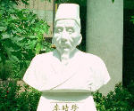

呂清夫 撰文

在台北榮總附近的中國醫藥研究所的校區裡面，不久前曾經矗立了很多雕像，它們都是中醫學界的列祖列宗，如神農、華陀、李時珍等人的大理石雕像。本來濟濟多士處處一字排開，幾十尊雕像雖然多了一點，倒也十分壯觀，可是後來卻成了不受歡迎的對象，原因倒不是因為它們不夠美觀。只因為當地的民眾似乎覺得，這一群雕像弄得這部份校區好像墳墓一般，高高長長的雕像台座似乎像個墓碑，並說小孩子經過校區常被嚇到，所以要求校方把它們搬走。 其實情況還不止如此，據說自從擺出那些「列祖列宗」以後，所方人員也頻出狀況，首先是副所長一退休馬上過世，其他有十幾位教職員工或其家人也都發生過大大小小的意外，這種事在雕像群未被擺出來之前從未發生，個中的巧合不得不令人稱奇。因之，不論主客觀因素，都註定了這批雕像被撤走的命運。類似的情況在台灣似乎所在多有，有個公家建築因為建築表面有很多尖尖的造形，便引起了對面住家的抗議。有個雕塑家的住家屋頂上散置了一尊政治銅像，與銅像面對面的住家也要求該銅像轉過身去。 最近備受矚目的類似案件應該是台北縣三重市玫瑰公園內的雕塑「吶喊的亞歷山大」，由於這件作品好像是一尊被「活埋」的人物雕像，雕像的身體被埋於地中，只有頭部跟四肢露出地面一部份，頭部表情又顯出痛苦的樣子，露出的四肢更是青筋暴漲，箭拔弩張。本來是想作成格列佛遊記中的「小人國」一般，讓小孩可以在雕像上面攀爬，不料結果反而嚇到了小孩，故引起民眾的不悅。尤有甚者，這件作品的出現適逢華航的大園空難事件，雕像「腦袋搬家」的印象居然被民眾認為跟空難有關，所以有人主張將之拆除的聲浪隨之高張。市公所於是決定在附近十個里進行民意調查，問問大家這件耗資七十萬的雕像到底拆還是不拆。本來，人對於東西如有好惡也僅止於喜不喜歡而已，但是我們竟然把它跟畏懼、死亡扯上關係。可知我們對於東西擺設的反應相當強烈，聯想力也相當豐富，對於藝術品的此種反應更是全世界少見的。西方學者芬奇（C.Finch）在談論現代藝術時，曾經令人意外的如此說道︰「對華人來說，所有西方的發明之中，最討厭的東西莫過於電線桿。電線桿的高度與間隔如果非常的規律，便破壞了傳統生活的平和平衡。所以直到今天，中國的街道都看不到整齊劃一的景象。每個住宅的擺設都必須不影響到主人的命運。也就是說，譬如為了配合戶外樹木的外形、附近河川的水量等等能夠帶來好的影響，所有擺設都由風水師來決定。所謂的風水師是指懂得物體的語彙（至少是一部份），同時能夠將之翻譯成足以維持生活和諧的語言。在今天高度都市化的歐美地區，藝術家雖然不必面對這種維持精神平和的儒教課題，但是他們似已開始留意這種技術的學習。」這種對於物體空間的感應如果出於人云亦云，可能變成一種迷信，但如果出於有感而發，則可能是一種精神活動了。
其實情況還不止如此，據說自從擺出那些「列祖列宗」以後，所方人員也頻出狀況，首先是副所長一退休馬上過世，其他有十幾位教職員工或其家人也都發生過大大小小的意外，這種事在雕像群未被擺出來之前從未發生，個中的巧合不得不令人稱奇。因之，不論主客觀因素，都註定了這批雕像被撤走的命運。類似的情況在台灣似乎所在多有，有個公家建築因為建築表面有很多尖尖的造形，便引起了對面住家的抗議。有個雕塑家的住家屋頂上散置了一尊政治銅像，與銅像面對面的住家也要求該銅像轉過身去。 最近備受矚目的類似案件應該是台北縣三重市玫瑰公園內的雕塑「吶喊的亞歷山大」，由於這件作品好像是一尊被「活埋」的人物雕像，雕像的身體被埋於地中，只有頭部跟四肢露出地面一部份，頭部表情又顯出痛苦的樣子，露出的四肢更是青筋暴漲，箭拔弩張。本來是想作成格列佛遊記中的「小人國」一般，讓小孩可以在雕像上面攀爬，不料結果反而嚇到了小孩，故引起民眾的不悅。尤有甚者，這件作品的出現適逢華航的大園空難事件，雕像「腦袋搬家」的印象居然被民眾認為跟空難有關，所以有人主張將之拆除的聲浪隨之高張。市公所於是決定在附近十個里進行民意調查，問問大家這件耗資七十萬的雕像到底拆還是不拆。本來，人對於東西如有好惡也僅止於喜不喜歡而已，但是我們竟然把它跟畏懼、死亡扯上關係。可知我們對於東西擺設的反應相當強烈，聯想力也相當豐富，對於藝術品的此種反應更是全世界少見的。西方學者芬奇（C.Finch）在談論現代藝術時，曾經令人意外的如此說道︰「對華人來說，所有西方的發明之中，最討厭的東西莫過於電線桿。電線桿的高度與間隔如果非常的規律，便破壞了傳統生活的平和平衡。所以直到今天，中國的街道都看不到整齊劃一的景象。每個住宅的擺設都必須不影響到主人的命運。也就是說，譬如為了配合戶外樹木的外形、附近河川的水量等等能夠帶來好的影響，所有擺設都由風水師來決定。所謂的風水師是指懂得物體的語彙（至少是一部份），同時能夠將之翻譯成足以維持生活和諧的語言。在今天高度都市化的歐美地區，藝術家雖然不必面對這種維持精神平和的儒教課題，但是他們似已開始留意這種技術的學習。」這種對於物體空間的感應如果出於人云亦云，可能變成一種迷信，但如果出於有感而發，則可能是一種精神活動了。